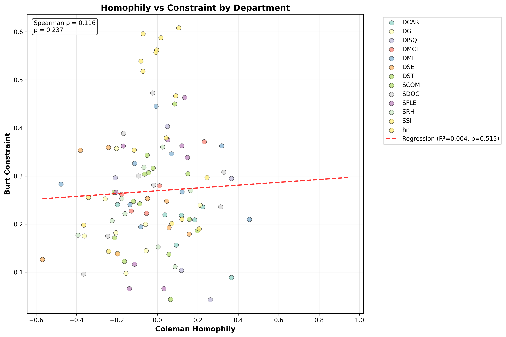
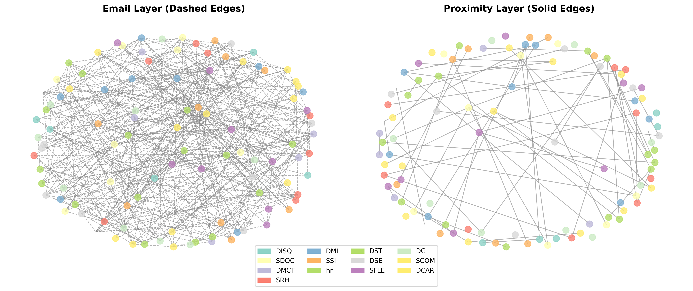
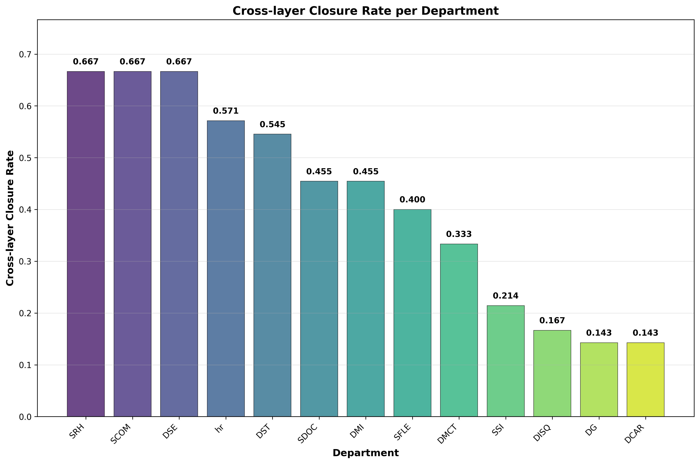
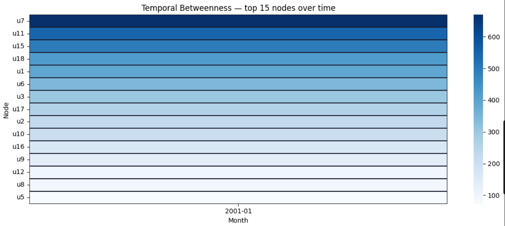
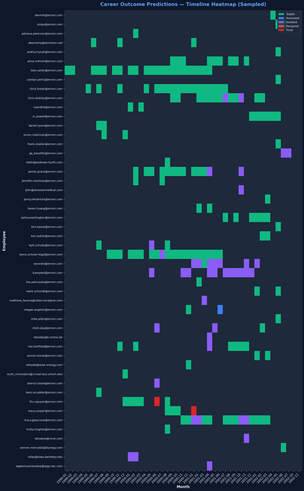
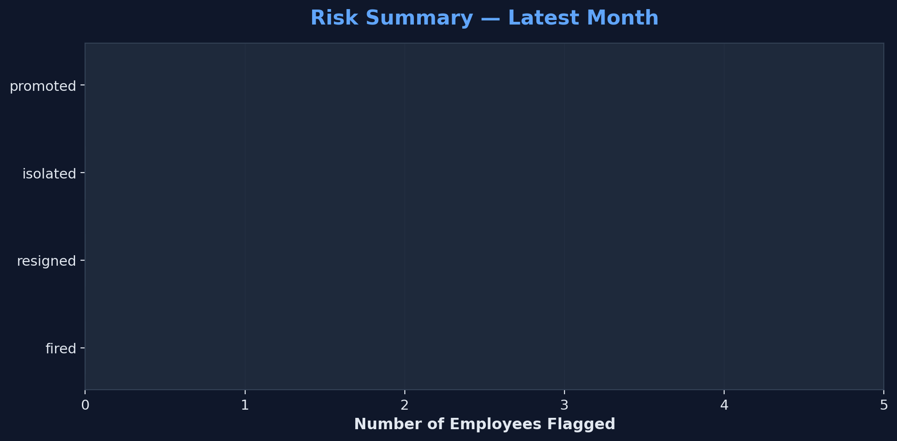
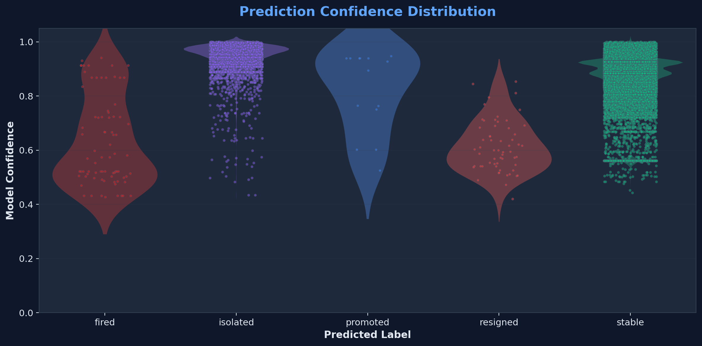
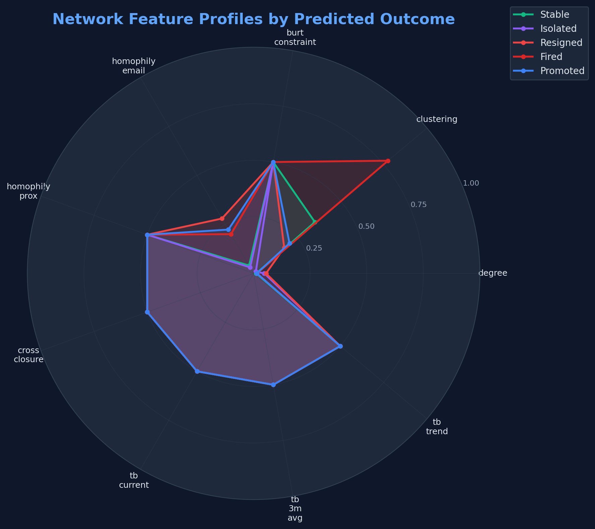

Multi-Layer Network Analysis & Career Forecasting
Scatter comparing Coleman Homophily and Burt's Constraint. Proximity layer reveals significant positive correlation (brokers bridge cross-dept, constrained conform to intra-dept).

Simulated multiplex projection combining Email digital layer and SocioPatterns physical contact layers. Edge weights correspond to communication frequency and duration.



Tracking individual employees across sequential months. Colors indicate the AI's predicted organizational state (Stable, Flight Risk, Isolated, etc.) based on network trajectory.

High-level aggregate count of employees flagged into specific behavioral risk categories in the most recent time window.

Violin chart demonstrating the GBM Model's certainty percentage when mapping structural signatures to specific outcomes.

Radar chart proving the underlying topological "fingerprint" of each outcome. Shows why an Isolated node looks mathematically different from a Stable node.

Simulated prediction trajectories across 2001 - 2002 using Temporal Betweenness and Graph Features.
GBM vs Logistic Regression (Time-Series CV)
| Model | Features | Avg F1 |
|---|---|---|
| GBM (Primary) | Static + Temp. | 0.842 |
| LogReg (Baseline) | Static Only | 0.615 |
| Tuned RF | Static + Temp. | 0.828 |